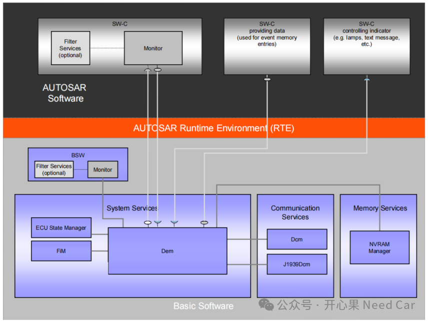
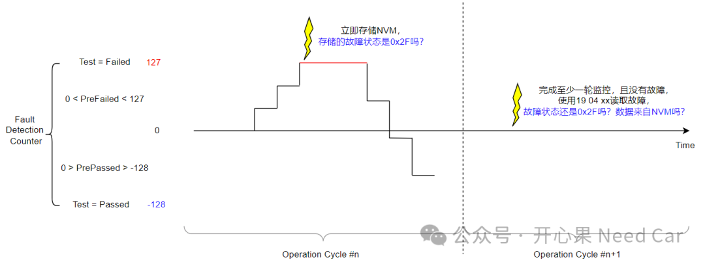
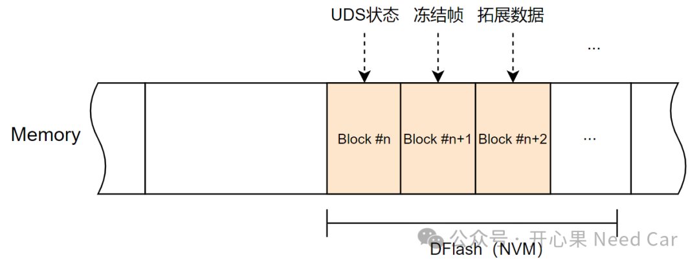
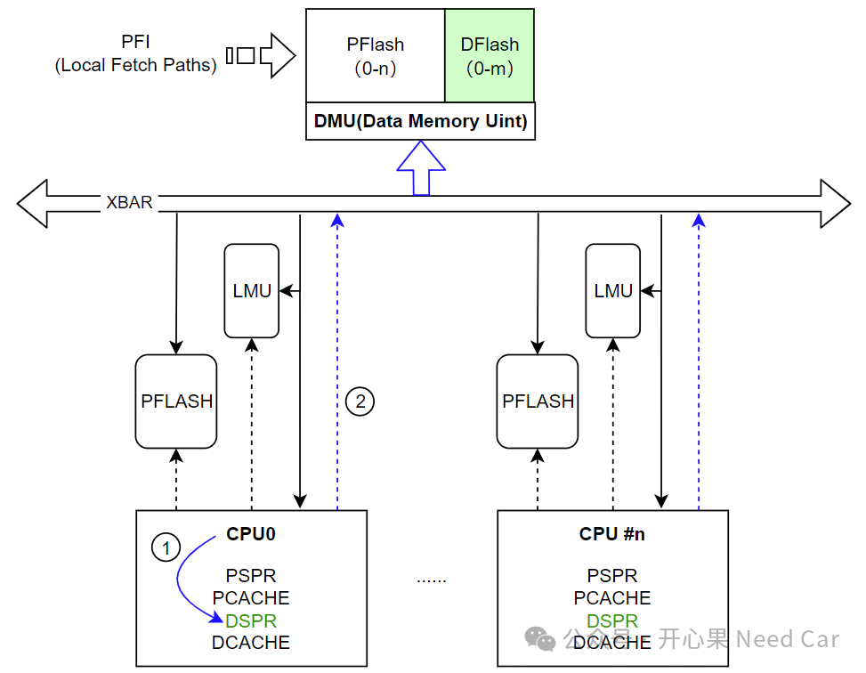
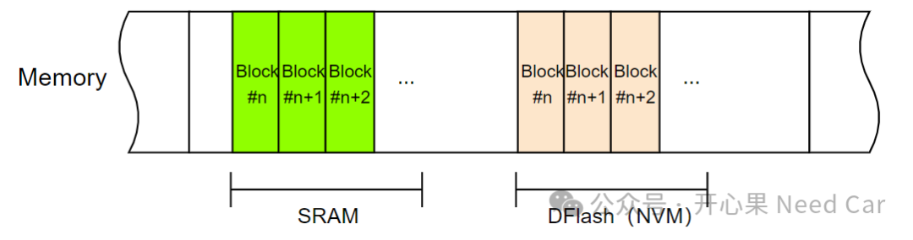
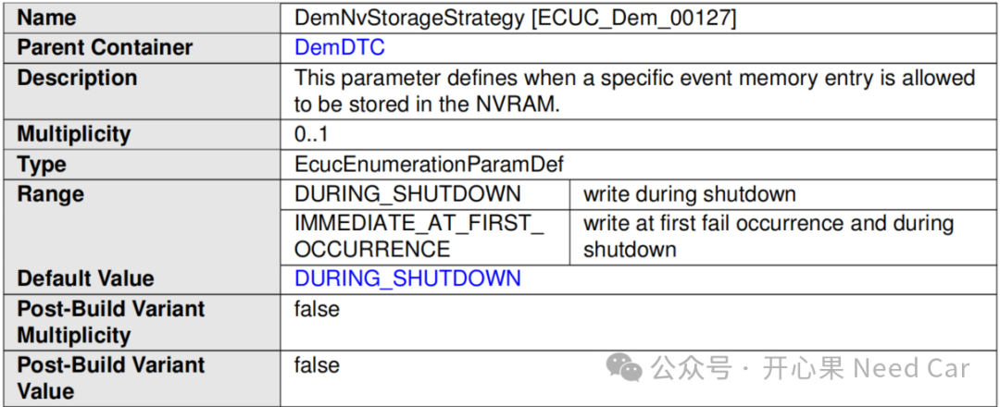
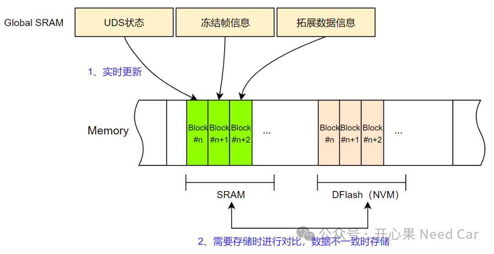
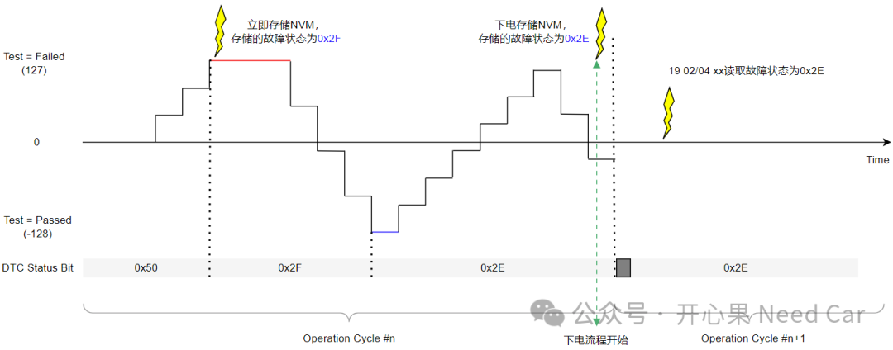

开心果 Need Car · 2024-04-30T18:20:00+08:00 · 微信原文
学习诊断，除了OEM（Original Equipment Manufacturer）企业标准外，还有很多通用的协议和规范需要"咀嚼"。面对这些规范，刚接触的小伙伴可能无从下手，感觉总是有知识盲点。诊断的学习就是这样一个过程，纵使工作数年，也未必详尽所有的细节。所以，在实践中不断积累和思考，是增加诊断技能的一个不错方法。
对于了解Autosar诊断的小伙伴，应该对下图(1)并不陌生。在Autosar的规范中，诊断包含多个模块（eg：DCM、DEM、FIM等）。所以，我们不能只盯着DCM（Diagnostic Communication Manager），就以为了解了诊断。DEM（Diagnostic Event Manager）、NVM（Non volatile Memory）等模块也是我们必须掌握的，否则，我们对一些诊断问题就会一知半解，而不得其解。


1、诊断的哪些数据需要存储NVM
诊断的主要目的是检测车辆是否存在故障，如果检测出故障，需要对故障信息存储，以便于售后维修。因此，存储的信息不能丢失。为了保证数据不丢失，信息需要存储到非易失内存中，也就是NVM中。存储的信息包括：UDS状态、冻结帧（freeze frame data）、拓展数据（extended data）和一些用户指定数据（比如：控制器唤醒原因、网络状态、安全解锁失败信息等）。
2、存储信息与NVM关系


如上图，CPU获取数据时，相比如去NVM获取（需要经过XBAR->DMU->访问接口等，路线2），从DSPR中获取数据更近（路线1），因此，读取RAM中数据速度会更快。
延伸拓展：为什么CPU0访问自身对应的PFlash0比访问PFlash1更快？因为CPU访问自身对应的PFlash时，可以通过自身的接口直接访问，如果要访问其他CPU对应的PFlash时，需要经过XBAR->DMU->访问接口等。

3、DEM的数据存储策略
在Autosar的DEM模块中，规定了"event memory entry"存储方式：
DURING_SHUTDOWN、IMMEDIATE_AT_FIRST_OCCURRENCE。这两种存储策略有什么不同呢？
DURING_SHUTDOWN：下电时存储。
IMMEDIATE_AT_FIRST_OCCURRENCE：信息存储两次，故障发生时和下电时。
Autosar DEM规范中的具体解释如下：

（一）信息存储到NVM流程
不管是立即存储还是下电存储，均会调用Flash Driver进行数据存储操作。区别：立即存储会调用两次Flash Driver对数据进行检查和存储，即：故障发生时，下电时调用。而下电存储只在下电时调用一次。
进行信息存储时，会先对比SRAM和NVM中数据是否一致，如果有更新才会存储，如果数据没有更新，则不会存储，示意如下：

所以，将如上的几个信息串起来，文章开篇的问题就有了答案。DTC存储条件：故障状态的bit0由0->1变化时触发故障信息的立即存储，那么，立即存储的UDS状态为0x2F。如果在当前循环，故障恢复，即：SRAM中的UDS状态变为0x2E（历史故障），在下电时，由于信息更新，会将0x2E状态存储到NVM。所以，下一个驾驶循环，使用19 04 xx服务读取对应DTC的快照数据时，读到的故障状态为0x2E（也就是历史故障），示意如下：

参考资料
（1）Specification of Diagnostic Event Manager AUTOSAR CP Release 4.4.0
往期精彩回顾